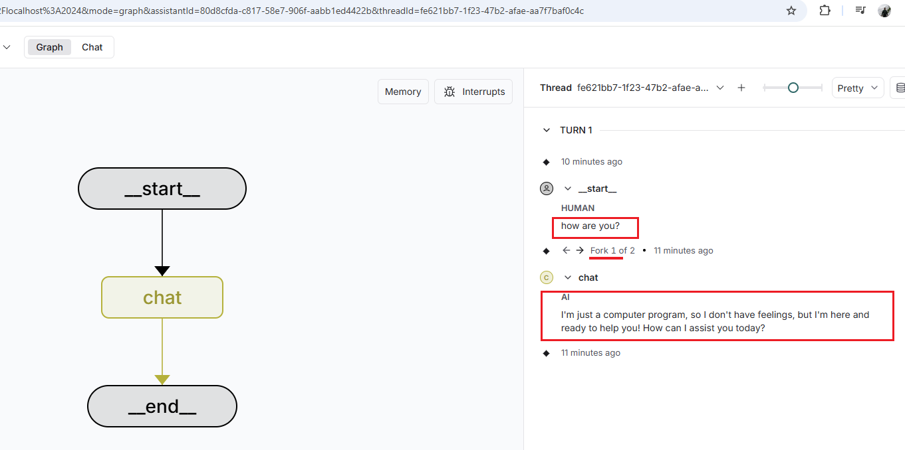
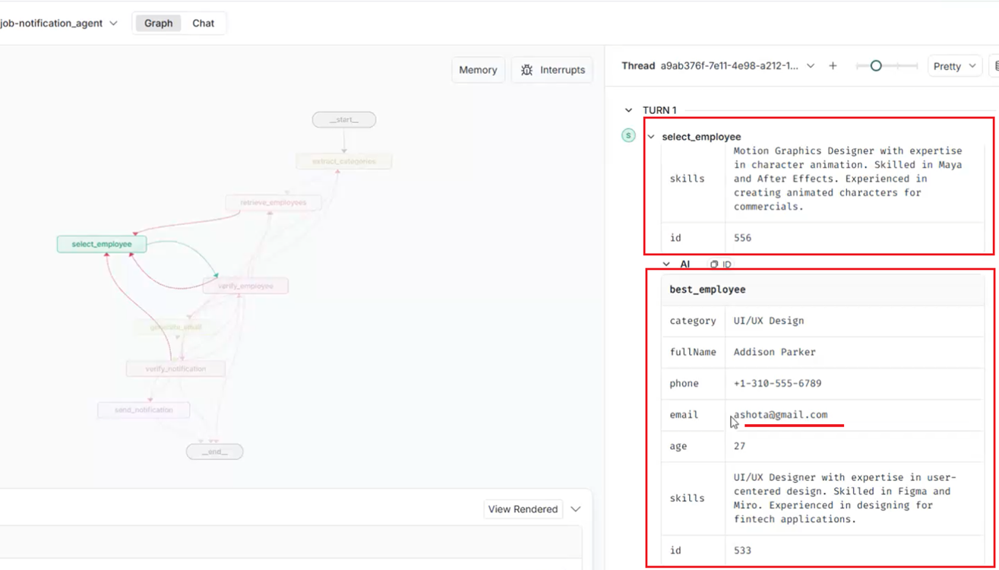
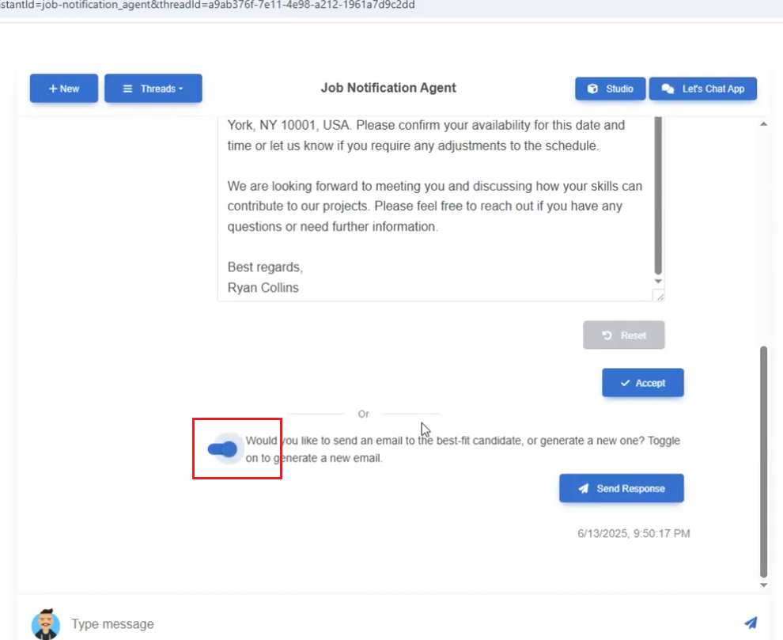
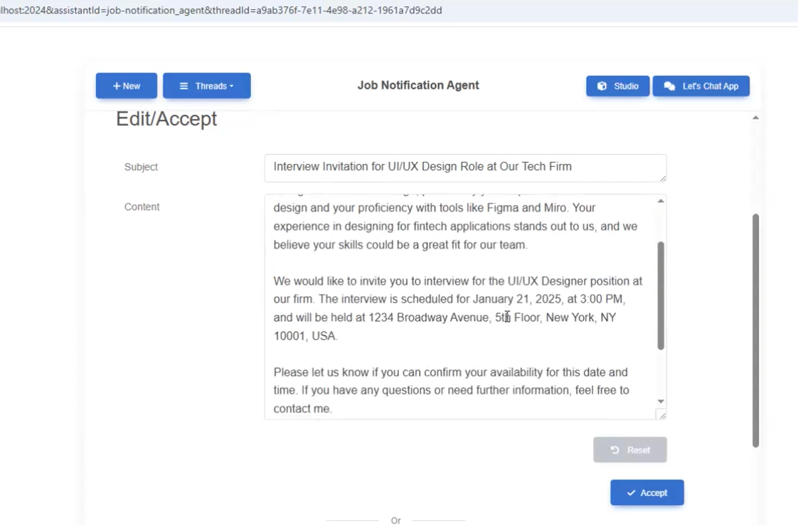
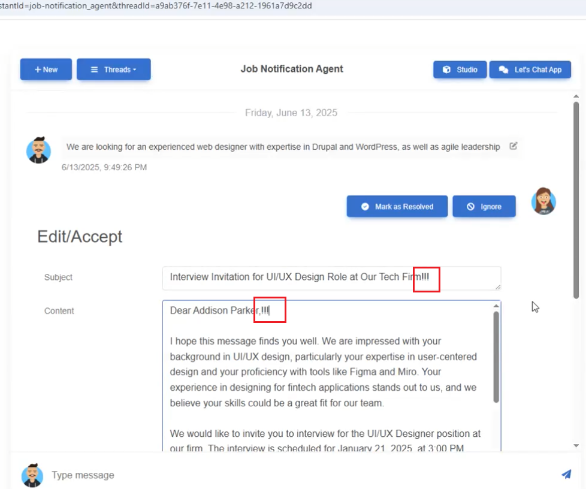
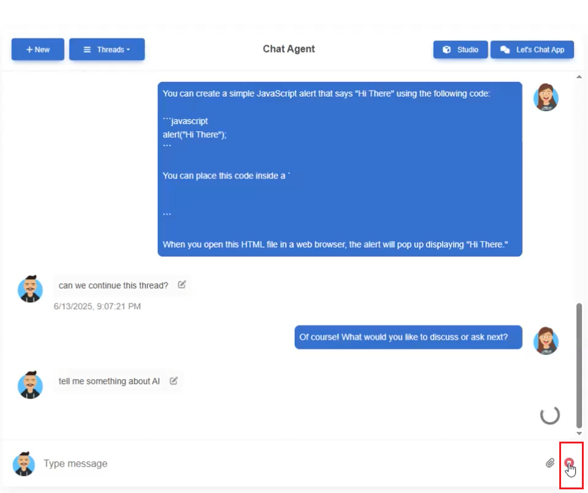

React Multi-Agent Chat Powered by LangGraph Server Agents
Video Link: https://youtu.be/q3ME4lPdib8
GitHub Repository: https://github.com/Ashot72/React-Multi-Agent-Chat-with-LangGraph
We already built LangGraph Server Agents Chat, Search, Job Notification, and Supervisor Agent. The Supervisor Agent determines which agent to use and routes the user prompt accordingly.
All agents run on the LangGraph.js server.
Figure 1
In this app, we will integrate LangGraph into our React application. We will use the useStream() React hook, which handles all the complexities of streaming, state management, and branching logic
allowing us to focus on building great chat experiences.
Figure 2
After running LangGraph Studio, we connect to it by specifying an agent.
Figure 3
We use the useStream() hook and do not need an API key, as we are in dev mode using LangGraph Studio.
Figure 4
When we connect to an agent, we see the app's interface, but no thread is created because no message has been sent to the server.
Figure 5
Once we send a prompt, a new thread (conversation) is created.
Figure 6
You can see the newly created thread in the Studio.
Figure 7
You can edit the message and resend it.
Figure 8
You can see that we now have two branches (forks). The last one is the response generated by asking, How are you there?
Figure 9
This is the original response. You can edit the prompt multiple times and get new AI responses.
Figure 10
You see the last response in the Studio as the second response.

Figure 11
This is the first prompt.
Figure 12
We can also regenerate an AI response. In our case, the responses are the same both times; however, in the video, you can see I generated three different responses regarding the JavaScript alert.
Figure 13
This is the same response, and in this case, they are identical.
Figure 14
Note that we generated this for the first prompt (branch), which was How are you?
Figure 15
For the second prompt, we still have one AI response.
Figure 16
You can see it in LangGraph Studio as well.
Figure 17
In the Chat Agent, we allow users to upload images (the upload icon is visible) and ask questions about them.
Figure 18
The uploaded base64 image can be seen in the Studio as well.
Figure 19
Another agent we connect to is the Search Agent. Unlike the Chat Agent, it can fetch real data using Tavily Search. For example, if you ask, What's the weather in Yerevan? the
Chat Agent cannot answer because it does not have access to live data.
Figure 20
Search Agent.
Figure 21
You can go to previous threads (conversations) of the same agent and even continue the conversation from those threads.
Figure 22
The third agent is the Job Notification Agent, where a recruiter can select the best candidate for a position simply by providing a prompt and sending an email notification.
Figure 23
In this agent, we use human interaction, which means a human decides what to do next. This is called an interrupt.
The first interrupt is the candidate selection interrupt. The candidate can be accepted, which means they move to the next step — the email sending interrupt.
Another option is sending a response, which means selecting another best-fit candidate. The candidate can also be ignored, which means we don't want to
proceed any further and the process stops.
Figure 24
In this agent, we first select categories that match the prompt.
Figure 25
Then we retrieve the list of candidates (employees).
Figure 26
We then select the best candidate.
Figure 27
After selecting the best-fit candidate, we reach the verify_employee interrupt, where a human must decide what to do next. This interrupt has four options: Allow Accept, Allow Edit, Allow Ignore,
and Allow Respond. These are the same options you saw in the screenshots above. We disabled Allow Edit in the candidate selection case, as there's no reason to edit the candidate's information.
However, we will see this option in the next interrupt.
Figure 28
We toggle on to select the next best-fit candidate by skipping the current one.
Figure 29
We received the next best-fit candidate and triggered the verify_employee interrupt.
Figure 30
In the Studio, we see the current best-fit candidate and two best_employee AI responses: the previous one and the current one.

Figure 31
You see the candidates, and we can skip many before selecting the best-fit one.
Figure 32
The selected candidate is suitable, so we accept them.
Figure 33
After selecting the candidate, we hit another interrupt, which is the email sending interrupt.
Figure 34
Note that this interrupt allows options including Allow Edit.

Figure 35
After generating the email via AI, we reach the next verify_notification interrupt, which allows editing.

Figure 36
Let's generate another email by skipping this one.

Figure 37
AI generated another email for the candidate based on their skills.

Figure 38
The second verify_notification interrupt.
Figure 39
This is the generated email, which we can edit before sending since the Allow Edit option is enabled, as we saw earlier.

Figure 40
We edited the email and submitted it.
Figure 41
The email is sent to the candidate.
Figure 42
The email received.
Figure 42
Sending emails is tricky when using the NodeMailer package. If you specify your Gmail username and password, it will not work. Google has changed its policy regarding this feature,
rendering it ineffective in resolving the problem. Thankfully, there is a solution that involves enabling 2-Step Verification and generating an app password.
Navigate to https://myaccount.google.com/u/2/security?hl=en enable 2-Step Verification, and create an app password, which I have already done. Then, put the app password in the .env file
Figure 44
The last agent is the Supervisor Agent, which routes the request to the appropriate agent based on the prompt.
Figure 45
We asked two questions to the Supervisor Agent.
Figure 46
The first prompt is handled by the Chat Agent.
Figure 47
The second prompt is handled by the Search Agent, as it uses Tavily Search to query live data.
Figure 48
The Supervisor Agent redirects the prompt to the Job Notification Agent.
Figure 49
In LangGraph Studio.
Figure 50
For testing purposes, let's change the interrupt options. For the verify_employee interrupt, we set Allow Ignore and Allow Respond to false. In the verify_notification interrupt, we set
Allow Accept to false.
Figure 51
You can see that on the best-fit participant page, you cannot ignore or send a response the only way to continue is to accept the candidate.
Figure 52
On the email sending page, you cannot accept it directly, you have to modify the content and then submit it.
Figure 53
The Studio button opens the LangGraph Studio.

Figure 54
We can also stop the stream.
Figure 55
This can be seen in the LangGraph Studio.
Figure 56
Mark as Resolved terminates (ENDs) or completes a graph or workflow execution.
Figure 57
The .env file requires the OpenAI API key, the Tavily Search key (which is free), and email settings for NodeMailer.